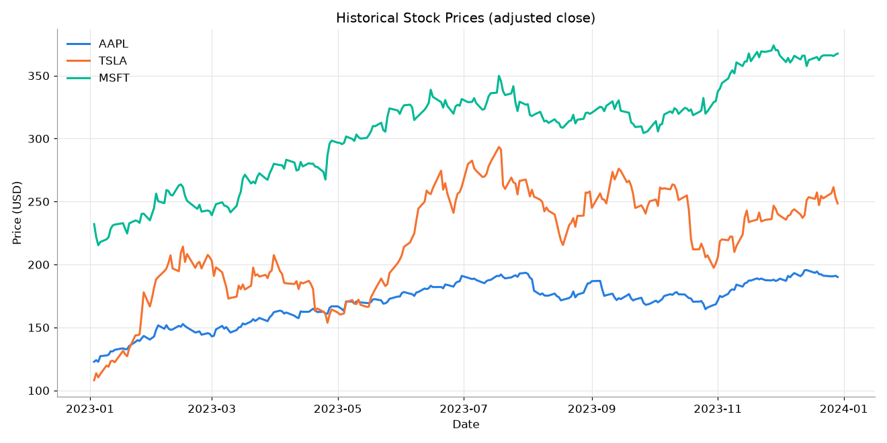
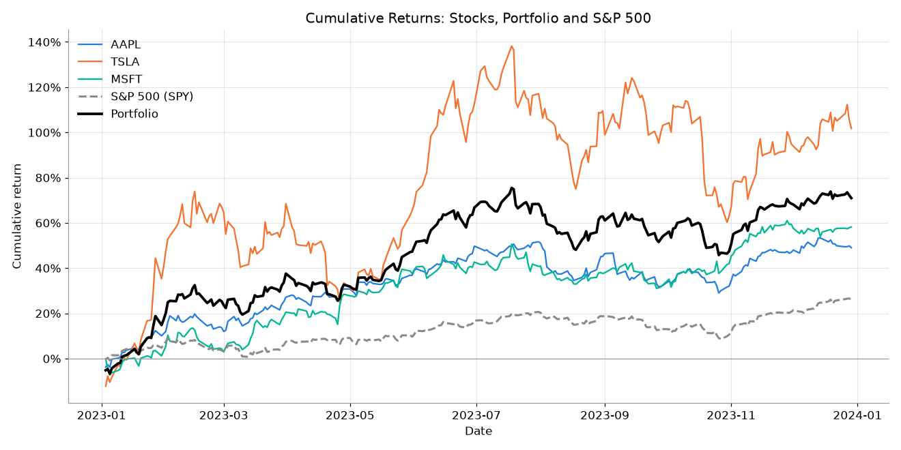
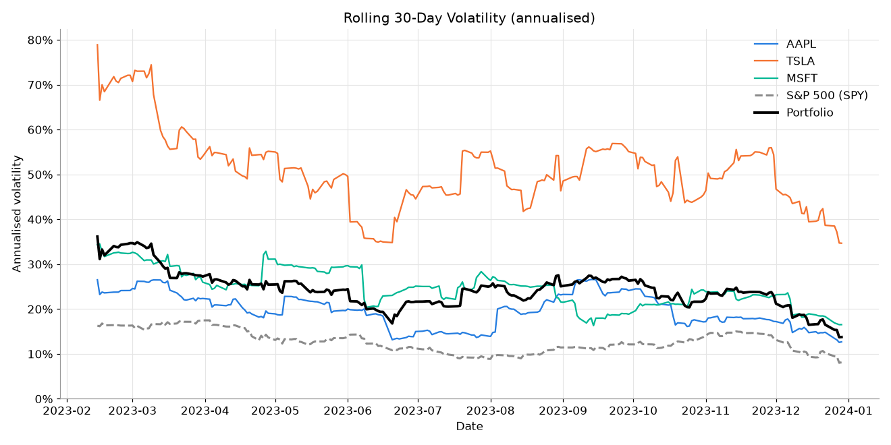
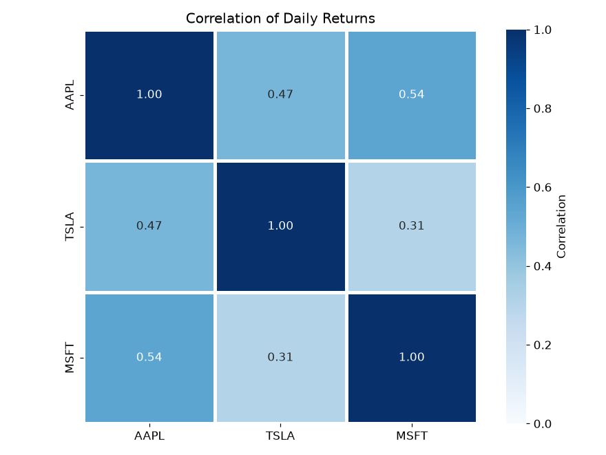

Python • Data Analysis • Visualisation
This project is a Python-based portfolio analysis tool that evaluates stock performance, computes risk and return metrics, and generates visualisations to better understand portfolio behaviour.
The portfolio holds three companies, using daily adjusted closing prices from Yahoo Finance for calendar year 2023:
The S&P 500 (via the SPY ETF) is used as a benchmark.




| 2023 total return | Ann. volatility | Sharpe ratio | Max drawdown | |
|---|---|---|---|---|
| Portfolio | 70.9% | 25.5% | 2.06 | −16.9% |
| AAPL | 49.0% | 20.3% | 1.84 | −14.9% |
| TSLA | 101.7% | 54.1% | 1.49 | −32.7% |
| MSFT | 58.2% | 25.1% | 1.78 | −13.0% |
| S&P 500 (SPY) | 26.2% | 13.1% | 1.49 | −10.0% |
Sharpe ratio = annualised mean daily excess return ÷ annualised volatility, with a 5% risk-free rate. It is not the same as (total return − risk-free rate) ÷ volatility.
| Correlation of daily returns | AAPL | TSLA | MSFT |
|---|---|---|---|
| AAPL | 1.00 | 0.47 | 0.54 |
| TSLA | 0.47 | 1.00 | 0.31 |
| MSFT | 0.54 | 0.31 | 1.00 |
Based on 250 daily returns (3 Jan – 29 Dec 2023). Total return is compounded over the year (last close of 2022 to last close of 2023). Volatility is annualised using 252 trading days. The 5% risk-free rate is roughly the average 3-month US Treasury bill yield in 2023. The portfolio applies fixed weights to daily returns, i.e. it is rebalanced daily. Prices are dividend-adjusted.
The portfolio achieved the best risk-adjusted return of anything analysed: a Sharpe ratio of 2.06, compared with 1.84 for AAPL, 1.78 for MSFT and 1.49 for both TSLA and the S&P 500.
TSLA delivered the largest return (101.7%) but with 54.1% volatility and a 32.7% drawdown. Because its daily returns were only weakly correlated with the other two stocks (0.47 with AAPL, 0.31 with MSFT), the portfolio's volatility was 25.5%, well below the 31.9% weighted average of the individual volatilities. That gap is the diversification benefit.
The portfolio's 70.9% return beat the S&P 500's 26.2%, though with roughly twice the volatility (25.5% vs 13.1%) and a deeper drawdown (−16.9% vs −10.0%), which is why the Sharpe ratio (2.06 vs 1.49) is a fairer comparison. The outperformance reflects a concentrated bet on large-cap tech during a strong year for the sector, so it should not be read as evidence that the allocation would outperform in general.